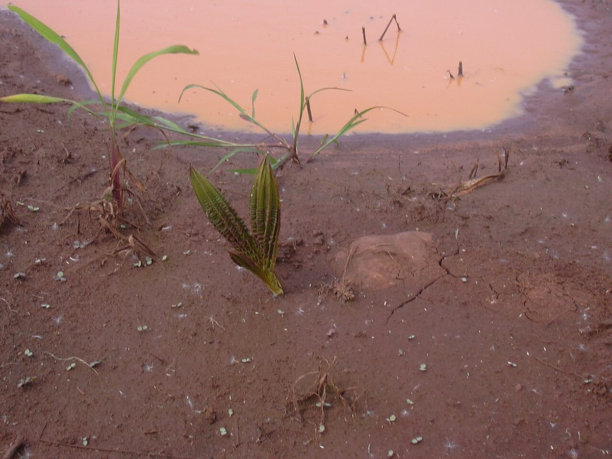
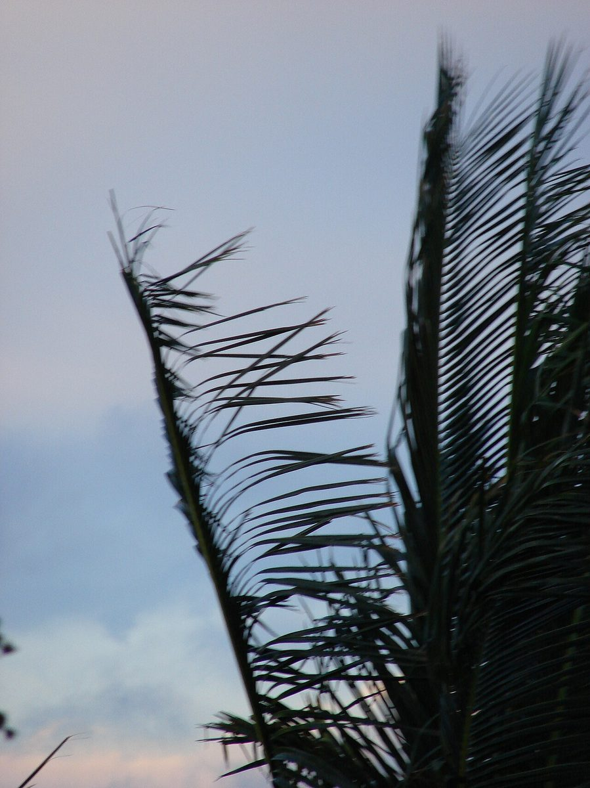
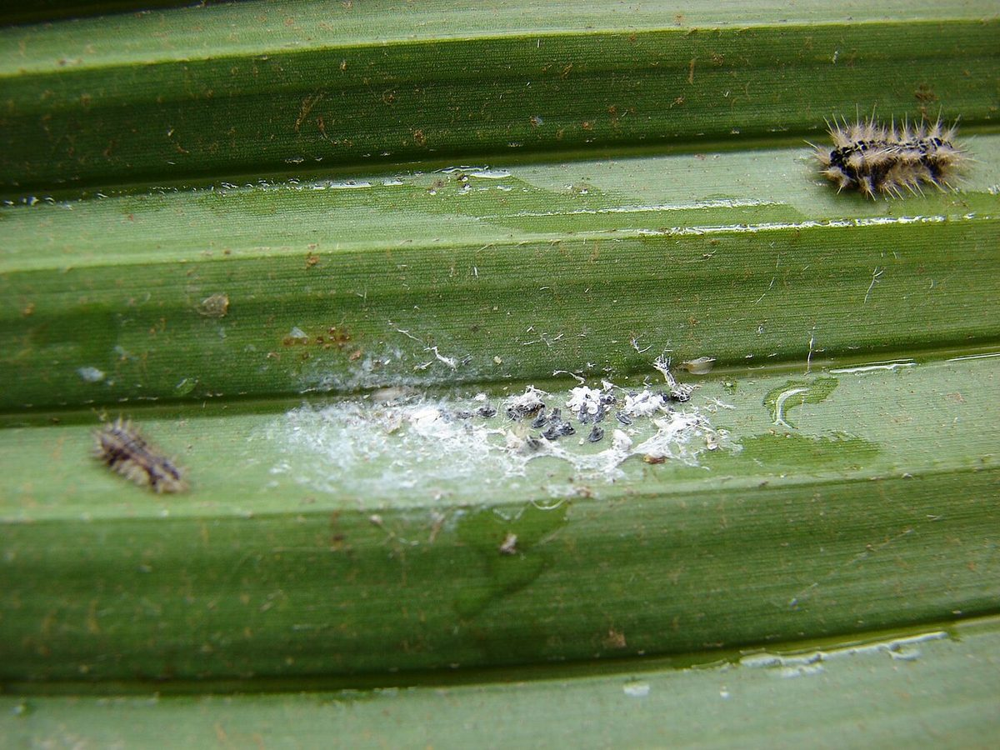

Cocos nucifera
niu · coconut palm, coconut



Quick facts
| Family | Arecaceae |
|---|---|
| Scientific name | Cocos nucifera |
| Hawaiian name(s) | niu |
| English name(s) | coconut palm, coconut |
| Status | Polynesian introduction (canoe plant) |
| Conservation | — |
| Coastal zones | Valley mouth Beach strand |
| Occurrence | Persistent groves at Kalalau, Honopū, Nuʻalolo Kai, and Miloliʻi valley mouths, plausibly deriving from pre-contact plantings by Hawaiian residents of those valleys prior to depopulation. Also scattered along back-beach strand where fallen nuts have taken root. |
How to identify
- Growth form
- Unbranched palm with a single grey trunk, often curved by wind and light-seeking. Trunk marked with ring-shaped scars from fallen leaf bases. Crown a rosette of large fronds; no branching.
- Size
- 20–30 m tall at maturity.
- Leaves
- Very large pinnate (feather-shaped) fronds, 4–6 m long, arching outward from the crown, each with many narrow leaflets.
- Flowers
- Small yellow-cream flowers on much-branched inflorescences (spadix) that emerge from among the fronds; usually only visible on closer inspection.
- Fruit / seed
- The familiar coconut — a large ovoid drupe up to 30 cm, with a smooth green (or brown when dry) outer skin, a thick fibrous husk, and a hard woody inner shell. Green (young) fruits carry the sweet coconut water; brown fruits are fully mature.
- Bark / stem
- Pale grey, smooth, ringed with leaf-scar bands.
- Where it sits on the coast
- Valley mouths (persistent groves), back-beach strand, and cultural plantings behind the beach.
Clinchers (features that lock the ID)
- Single unbranched grey ringed trunk — no other Kauaʻi coastal palm has this.
- Large pinnate (feather) fronds, not palmate (fan) fronds.
- Large hard-shelled fibrous-husked coconut fruit.
- Persistent groves at Nā Pali valley mouths — habitat context.
Look-alikes
- Pritchardia spp. (loulu, native Hawaiian fan palms) — Loulu have palmate (fan-shaped) fronds — a completely different leaf architecture — and small round black-purple fruits, not the large coconut. Trunk is typically slimmer, unringed.
Ecology
Pantropical strand palm with a buoyant, salt-tolerant, long-viable seed capable of ocean drift — a fact central to its biogeographic history and to the uncertainty note below. In Hawaiian coastal ecosystems niu provides shade, food (fallen fruit), and structure at valley mouths. [1], [2], [3], [10], [32]
Cultural significance
Niu is a keystone canoe plant in Hawaiian tradition: food (young water and mature endosperm), cordage (senit twisted from husk fibre), thatching (fronds), containers (shells), oil, and wood — a complete provisioning tree. Kalalau, Miloliʻi, and Nuʻalolo Kai valleys still carry the physical memory of the families who tended these groves. This guide names those relationships without giving harvest or preparation technique; that transmission belongs to Hawaiian practitioners and lineal descendants of the valleys.